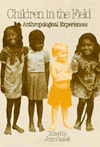
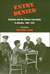

|
|
Abandoned
to Their Fate
Social Policy and Practice Toward Severely Retarded People in
America, 1820-1920
Ferguson,
Philip M.
19th-century treatment of severely mentally disabled people raises
important questions for today's policy makers
232 pp • 5.5x8.25 • Spring 1994
cloth 1-56639-154-7
EAN 978-1-56639-154-2
|
|
|
AIDS
Crisis in Professional Ethics
Cohen,
Elliot D., and Michael Davis, eds.
Professionals face tough questions raised by the AIDS pandemic
288 pp • 6x9 • Spring 1994
paper 1-56639-165-2
EAN 978-1-56639-165-8
cloth 1-56639-164-4
EAN 978-1-56639-164-1
|
| 
|
All
Talk
The Talkshow in Media Culture
Munson,
Wayne
The postmodern phenomenon of the talkshow and its place in American
culture
New in Paperback!
288 pp • 6x9 • Fall 1992
paper 1-56639-194-6
EAN 978-1-56639-194-8
|
| 
|
The
Asian American Movement
Wei,
William
The first history and analysis of the Asian American Movement
New in Paperback!
376 pp • 6x9 • Spring 1993
paper 1-56639-183-0
EAN 978-1-56639-183-2
|
| 
|
The
Baltimore Book
New Views of Local History
Fee,
Elizabeth, Linda Shopes, and Linda Zeidman, eds.
A tour guide to places in the city that are important to labor,
African Americans, and women's history
New in Paperback!
256 pp • Fall 1991
paper 1-56639-184-9
EAN 978-1-56639-184-9
|
|
|
Black
Baltimore
A New Theory of Community
McDougall,
Harold A.
Community self-help movements in Old West Baltimore provide an
example of participatory democracy for other neighborhoods
New in Paperback!
272 pp • 6x9 • Spring 1993
paper 1-56639-193-8
EAN 978-1-56639-193-1
|
| 
|
Cattle,
Capitalism, and Class
Ilparakuyo Maasai Transformations
Rigby,
Peter
An anthropologist explores the failure of rural development policies
in pastoral societies
New in Paperback!
272 pp • 6x9 • Fall 1992
paper 1-56639-204-7
EAN 978-1-56639-204-4
|
|
|
Child,
Parent, and State
Law and Policy Reader
Humm,
Randall S., Beate Anne Ort, Martin Mazen Anbari, Wendy S. Lader, and
William Scott Biel, eds.
A thorough study of the legal policy in which our basic assumptions
about juveniles and the tradeoff between punishment and procedure
are delineated
712 pp • 7x10 • Spring 1994
paper 1-56639-134-2
EAN 978-1-56639-134-4
cloth 1-56639-133-4
EAN 978-1-56639-133-7
|
| 
|
Children
in the Field
Anthropological Experiences
Cassell,
Joan
Funny, sad, horrifying, and fascinating narratives by anthropologists
who brought children with them into the field
New in Paperback!
288 pp • Fall 1987
paper 1-56639-206-3
EAN 978-1-56639-206-8
|
|
|
Coming
of Age in Buffalo
Youth and Authority in the Postwar Era
Graebner,
William
Defining Youth Culture in postwar era New York
New in Paperback!
200 pp • Fall 1989
paper 1-56639-197-0
EAN 978-1-56639-197-9
|
| 
|
Common
Sense about Police Review
Perez,
Douglas W.
A call for effective police review systems
336 pp • 6x9 • Spring 1994
paper 1-56639-336-1
EAN 978-1-56639-336-2
cloth 1-56639-132-6
EAN 978-1-56639-132-0
|
|
|
A
Complex Sorrow
Reflections on Cancer and an Abbreviated Life
Paget,
Marianne A., and Marjorie L. DeVault
The last work of a scholar whose life mirrored her work
New in Paperback!
176 pp • 5.5x8.25 • Spring 1993
paper 1-56639-192-X
EAN 978-1-56639-192-4
|
| 
|
Credit
Where It's Due
Development Banking for Communities
Parzen,
Julia Ann, and Michael Hall Kieschnick
Lessons learned from successful development banks in U.S. communities
New in Paperback!
288 pp • 5.5x8.25 • Fall 1992
paper 1-56639-185-7
EAN 978-1-56639-185-6
|
|
|
Critique
of Applied Ethics
Reflections and Recommendations
Edel,
Abraham, Elizabeth Flower, and Finbarr W. O’Connor
Distinguished philosophers critique applied ehtics, past and
present
288 pp • 6x9 • Spring 1994
paper 1-56639-158-X
EAN 978-1-56639-158-0
cloth 1-56639-157-1
EAN 978-1-56639-157-3
|
| 
|
Derrida
and Wittgenstein
Garver,
Newton, and S. C. Lee
A critical comparison of two influential philosophers' appraches
to language
264 pp • 5.5x8.25 • Spring 1994
paper 1-56639-374-4
EAN 978-1-56639-374-4
cloth 1-56639-172-5
EAN 978-1-56639-172-6
|
| 
|
Entry
Denied
Exclusion and the Chinese Community in America, 1882-1943
Chan,
Sucheng, ed.
Legal history illuminating Chinese Americans' struggle for civil
rights
New in Paperback!
320 pp • Spring 1991
paper 1-56639-201-2
EAN 978-1-56639-201-3
|
|
|
Global
Production
The Apparel Industry in the Pacific Rim
Bonacich,
Edna, Lucie Cheng, Norma Chinchilla, Nora Hamilton, and Paul Ong,
eds.
Pacific Rim scholars look at globalization's impact on international
economics
400 pp • 6x9 • Spring 1994
paper 1-56639-169-5
EAN 978-1-56639-169-6
cloth 1-56639-168-7
EAN 978-1-56639-168-9
|
|
|
Hmong
Means Free
Life in Laos and America
Chan,
Sucheng, ed.
Three generations of Hmong refugees expose the trauma and the
joy of their lives
296 pp • 6x9 • Spring 1994
paper 1-56639-163-6
EAN 978-1-56639-163-4
cloth 1-56639-162-8
EAN 978-1-56639-162-7
|
| 
|
Justifying
Law
The Debate over Foundations, Goals, and Methods
Belliotti,
Raymond A.
A critical survey of a number of philosophical approaches to
law and judicial decision-making
New in Paperback!
312 pp • 6x9 • Spring 1992
paper 1-56639-203-9
EAN 978-1-56639-203-7
|
| 
|
Life’s
America
Family and Nation in Postwar Photojournalism
Kozol,
Wendy
Life magazine's news photos reveal an unrealistic portrait of
Cold War era politics and domestic life
232 pp • 8.5x11 • Spring 1994
paper 1-56639-221-7
EAN 978-1-56639-221-1
cloth 1-56639-152-0
EAN 978-1-56639-152-8
|
| 
|
Making
Ethnic Choices
California's Punjabi Mexican Americans
Leonard,
Karen Isaken
Defining and changing perceptions of ethnic identity
New in Paperback!
352 pp • 6x9 • Spring 1992
paper 1-56639-202-0
EAN 978-1-56639-202-0
|
| 
|
The
Male Nude in Contemporary Photography
Davis,
Melody D.
A unique study of the interrelation between social perceptions
of the male nude and the medium of photography
New in Paperback!
208 pp • 7x10 • Fall 1991
paper 1-56639-198-9
EAN 978-1-56639-198-6
|
|
|
New
Immigrants, Old Unions
Organizing Undocumented Workers in Los Angeles
Delgado,
H�ctor L.
A case study of a successful effort to unionize undocumented
immigrant workers
New in Paperback!
200 pp • 5.5x8.25 • Spring 1993
paper 1-56639-205-5
EAN 978-1-56639-205-1
|
|
|
Not
June Cleaver
Women and Gender in Postwar America, 1945-1960
Meyerowitz,
Joanne
A denouncement of the housewife stereotype imposed on post-Warld
War II women
424 pp • 6x9 • Spring 1994
paper 1-56639-171-7
EAN 978-1-56639-171-9
cloth 1-56639-170-9
EAN 978-1-56639-170-2
|
|
|
Organizing
Asian American Labor
The Pacific Coast Canned-Salmon Industry, 1870-1942
Friday,
Chris
Asian and Asian American workers resist oppression and shape
their own lives
296 pp • 6x9 • Spring 1994
paper 1-56639-398-1
EAN 978-1-56639-398-0
cloth 1-56639-139-3
EAN 978-1-56639-139-9
|
| 
|
Organizing
In Hard Times
Labor and Neighborhoods In Hartford
Simmons,
Louise B.
One of America's poorest cities copes with economic restructuring
200 pp • 5.5x8.25 • Spring 1994
paper 1-56639-156-3
EAN 978-1-56639-156-6
cloth 1-56639-155-5
EAN 978-1-56639-155-9
|
|
|
"Other
Sheep I Have"
The Autobiography of Father Paul M. Washington
Washington,
Paul, David McI. Gracie, and Barbara Harris
An inner-city Episcopal priest shares a lifetime of fighting
for civil and women's rights
280 pp • 5.5x8.25 • Spring 1994
paper 1-56639-178-4
EAN 978-1-56639-178-8
cloth 1-56639-177-6
EAN 978-1-56639-177-1
|
| 
|
Paradise
Remade
The Politics of Culture and History in Hawai'i
Buck,
Elizabeth
A rereading of Hawaiian history
New in Paperback!
288 pp • 5.5x8.25 • Fall 1992
paper 1-56639-200-4
EAN 978-1-56639-200-6
|
|
|
Pedal
to the Metal
The Work Life of Truckers
Ouellet,
Lawrence J.
A revealing inside account of truckers' work ethic
272 pp • 6x9 • Spring 1994
paper 1-56639-176-8
EAN 978-1-56639-176-4
cloth 1-56639-175-X
EAN 978-1-56639-175-7
|
|
|
The
Politics of the Possible
The Brazilian Rural Workers' Trade Union Movement, 1964-1985
Maybury-Lewis,
Biorn
How agrarian reform and unionization was achieved despite Brazil's
military regime
320 pp • 6x9 • Spring 1994
paper 1-56639-167-9
EAN 978-1-56639-167-2
cloth 1-56639-166-0
EAN 978-1-56639-166-5
|
|
|
Radical
Philosophy
Tradition, Counter-Tradition, Politics
Gottlieb,
Roger S., ed.
Well-known radical philosophers challenge and reflect on political
practice and cultural domination
New in Paperback!
304 pp • 6x9 • Spring 1993
paper 1-56639-047-8
EAN 978-1-56639-047-7
|
|
|
Reconstructing
Prehistory
Scientific Method in Archaeology
Bell,
James A.
A bold new method of theorizing about the prehistoric past
368 pp • 6x9 • Spring 1994
paper 1-56639-160-1
EAN 978-1-56639-160-3
cloth 1-56639-159-8
EAN 978-1-56639-159-7
|
|
|
Reshaping
Ethnic and Racial Relations in Philadelphia
Immigrants in a Divided City
Goode,
Judith, and Jo Anne Schneider
Strategies for cooperation in ethnically and racially diverse
neighborhoods
296 pp • 6x9 • Spring 1994
paper 1-56639-141-5
EAN 978-1-56639-141-2
cloth 1-56639-140-7
EAN 978-1-56639-140-5
|
|
|
Sexual
Cultures and the Construction of Adolescent Identities
Irvine,
Janice M.
Adolescent sexual awakening is reevaluated in terms of social
and cultural influences
336 pp • 6x9 • Spring 1994
paper 1-56639-136-9
EAN 978-1-56639-136-8
cloth 1-56639-135-0
EAN 978-1-56639-135-1
|
| 
|
Shadows
on the Past
Studies in the Historical Fiction Film
Grindon,
Leger
A new genre of film is identified and explored
264 pp • 6x9 • Spring 1994
paper 1-56639-182-2
EAN 978-1-56639-182-5
cloth 1-56639-181-4
EAN 978-1-56639-181-8
|
|
|
The
Suburban Racial Dilemma
Housing and Neighborhoods
Keating,
W. Dennis
An examination of the dilemmas of integrating America's suburbs
288 pp • 6x9 • Spring 1994
paper 1-56639-148-2
EAN 978-1-56639-148-1
cloth 1-56639-147-4
EAN 978-1-56639-147-4
|
|
|
Surrogates
and Other Mothers
The Debates over Assisted Reproduction
Macklin,
Ruth
An ethicist traces an infertile couple's journey through the
moral and legal maze of reproductive alternatives
264 pp • 6x9 • Spring 1994
paper 1-56639-180-6
EAN 978-1-56639-180-1
cloth 1-56639-179-2
EAN 978-1-56639-179-5
|
|
|
Tainted
Greatness
Antisemitism and Cultural Heroes
Harrowitz,
Nancy A., ed.
Debates about the significance of anti-semitism in the lives
and work of intellectual figures
328 pp • 6x9 • Spring 1994
paper 1-56639-161-X
EAN 978-1-56639-161-0
cloth 1-56639-153-9
EAN 978-1-56639-153-5
|
|
|
Urban
Leviathan
Mexico City in the Twentieth Century
Davis,
Diane E.
The story of crippling overdevelopment in Mexico's economic and
social center
424 pp • 6x9.25 • Spring 1994
paper 1-56639-151-2
EAN 978-1-56639-151-1
cloth 1-56639-150-4
EAN 978-1-56639-150-4
|
|
|
Women's
Paid and Unpaid Labor
The Work Transfer in Health Care and Retailing
Glazer,
Nona Y.
Self-service innovations have subsidized capitalism while increasing
women's unpaid work
New in Paperback!
360 pp • 6x9 • Fall 1992
paper 1-56639-199-7
EAN 978-1-56639-199-3
|